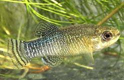
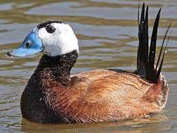
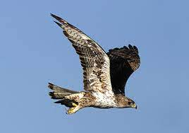
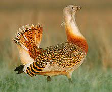
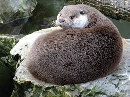
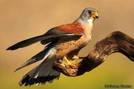

Farfet
Población: Mar Menor
Pez de cuerpo pequeño, que raramente supera los 5 cm de longitud total, siendo normalmente las hembras de mayor tamaño que los machos de la misma edad.
Mas información

Malvasía cabeciblanca
Población: Antiguas depuradoras
La malvasía cabeciblanca es un pato compacto, que mide entre 43 y 48 cm de largo y pesa entre 580 y 750 g, que tiene el cuello corto y la cola larga y rígida.
Mas información

Águila perdicera
Población: Sierras del Altiplano
El águila perdicera es una rapaz de apreciable tamaño, aunque algo menor que la real, con una envergadura entre 1,50 m y 1,70 m y un peso entre los 1,6 y 2,2kg.
Mas información
Lince Ibérico
Población: Sierra Espuña
Es un felino de aspecto grácil, con patas largas y una cola corta con una borla negra en el extremo que suele mantener erguida batiéndola en momentos de peligro.
Mas información

Avutarda Común
Población: Altiplano
La avutarda común es un ave de gran tamaño con patas y cuello largos y un voluminoso cuerpo en forma de barril, adaptada a la forma de vida esteparia.
Mas información

Nutria
Población: Ríos de la Región
Tiene el pelaje pardo y corto, con una característica mancha blanca en la garganta y membranas entre los dedos de las extremidades anteriores y posteriores.
Mas información

Cernícalo Primilla
Población: Cuenca del Mediterráneo
Es una rapaz muy similar al cernícalo vulgar (Falco tinnunculus), pero algo más pequeño, entre 27 y 33 cm de longitud.
Mas información